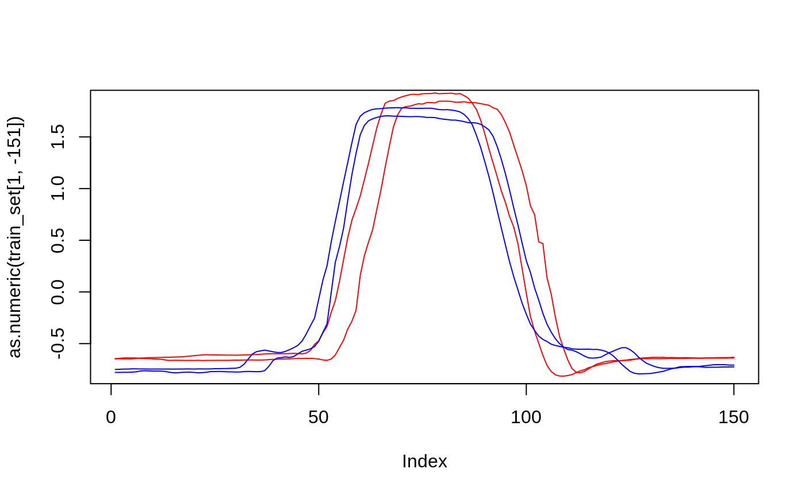

vignettes/TimeSeriesClassification.Rmd
TimeSeriesClassification.RmdThe aim of this package is to provide a unified interface to several algorithms available in the The Great Time Series Classification Bake Off (Bagnall et al. (2018)). An overview over the available classifiers can be found at the end of this vignette.
The main aim of this library is to expose train and predict functions for all classifiers including their hyperparameters through a unified interface. We allow this either from a data.frame or a file in the .arff format. The current state of the underlying Java Code expects a file in the .arff format and writes the resulting model to disk.
Note, that the current implementation focuses on a single 1-Dimensional time-series / functional. We aim to extend this in the future, when algorithms for such problems become available.
In order to showcase this package’s functionality, we go through two simple examples.
tsclassification is implemented using R6 classes. This allows us to offer an API similar to python’s scikit-learn or R’s mlr3.
For this example, we assume that our data is available in the .arff format. We have two files, GunPoint_TRAIN.arff and GunPoint_TEST.arff, which contain the training and test-data respectively. Those data sets are contained in this package. We first save the file-paths to both datasets:
train_data = file.path(system.file("arff", package="tsclassification"), "GunPoint_TRAIN.arff")
test_data = file.path(system.file("arff", package="tsclassification"), "GunPoint_TEST.arff")Afterwards, we choose a classification algorithm we want to train using our data. In this case we choose DTW1NN (Dynamic Time-Warping with 1 Nearest-Neighbor). This is a simple yet often very successful baseline. The names for different implementations can be obtained from the Table of Implemented Classifiers below. We use the name to construct a TSClassifier object.
We can now call this object’s $train method, supplying the file-path to the training data. Note that this always expects that the target column in the file is called target.
The $train method then internally trains a model and stores it’s path. Afterwards, we can use the $predict method in order to predict on the held-out test data.
The train method saves the resulting model to disk, as a default to a tempfile(). A different save path can be set during initialization, i.e. using TSClassifier$new(classif_name, model_path = "path/to/model")
The same methodology can be used in order to train from a data.frame. First we read the data, and quickly visualize it:
library(farff)
train_set = readARFF(train_data)
#> Parse with reader=readr : /home/travis/R/Library/tsclassification/arff/GunPoint_TRAIN.arff
#> Loading required package: readr
#> header: 0.031000; preproc: 0.000000; data: 0.029000; postproc: 0.002000; total: 0.062000Our data has 50 rows and 151 columns. The first 150 columns correspond to a time-series, while the last column is the class-label (target).
The plot below visualizes two exemplary time-series for two classes (in red and blue): The x-axis corresponds to the continuum (in our cast the time), while the y-axis is the measured signal.

Afterwards, we again fit a classifier. This time we choose the BOSS (Bag of SFA Symbols) classifiers.
and we can get predictions for the test data using
test_set = readARFF(test_data)
#> Parse with reader=readr : /home/travis/R/Library/tsclassification/arff/GunPoint_TEST.arff
#> header: 0.031000; preproc: 0.001000; data: 0.011000; postproc: 0.000000; total: 0.043000
tsc$predict(test_set)
#> [1] 1 2 2 1 1 2 1 2 2 1 1 1 2 1 1 1 1 2 2 2 1 2 1 1 1 2 1 1 2 1 1 2 2 1 1
#> [36] 1 1 1 1 2 1 2 1 1 2 1 2 2 1 2 2 2 1 2 1 1 2 2 1 2 1 2 1 1 2 1 1 2 2 2
#> [71] 2 2 2 2 2 2 2 2 2 1 1 1 2 2 2 2 1 2 1 1 1 2 1 2 1 1 2 2 1 1 2 1 1 2 2
#> [106] 1 1 2 1 2 2 2 1 2 1 1 2 1 1 2 1 2 2 2 1 2 1 1 2 2 2 2 1 1 1 2 1 2 1 1
#> [141] 2 1 1 2 1 2 1 2 2 1
#> Levels: 1 2The underlying model is saved to the model_path:
Afterwards we can also clean-up the intermediate saved files using
In this example, we want to additionally set a hyperparameter for the BOSS algorithm: ?tsc_classifiers contains a list of available hyperparameters and valid ranges for a given method.
tsc = TSClassifier$new("timeseriesweka.classifiers.BOSS")
tsc$train(train_data, par_vals = list(setMaxEnsembleSize = 1))
tsc$predict(test_data)In another example, we train a Time-Series Bag of Features:
tsc = TSClassifier$new("timeseriesweka.classifiers.TSBF")
tsc$train(train_data, par_vals = list(setZLevel = 0.5))
tsc$predict(test_data)Please consult the original papers for the respective algorithms for more information on how to optimally choose the respective hyperparameters.
We implement some additional functionality besides providing a train/test interface for multiple algorithms. This includes resampling and some additional helper functions for working with our interface.
For users who do prefer a more traditional interface, we also allow training, prediction and resampling using a traditional interface:
model_path = tempfile()
mod = train_tsc(train_data, classifier = "weka.classifiers.trees.J48", model_path = model_path)
predict_tsc(test_data, model_path = model_path)
#> [1] 0 1 1 0 0 1 0 1 0 0 1 1 0 0 0 1 0 1 0 1 0 1 0 1 0 1 0 0 0 0 0 1 1 0 0
#> [36] 0 0 1 0 0 0 1 1 1 1 1 1 0 0 1 0 0 0 0 0 0 1 1 0 1 0 1 0 0 0 1 0 0 1 1
#> [71] 1 1 0 1 1 1 1 1 1 0 0 0 1 1 1 1 0 1 0 1 0 1 0 1 1 0 1 1 0 0 1 0 0 1 1
#> [106] 1 0 1 0 1 1 1 0 1 0 0 1 0 1 1 0 1 1 1 0 1 0 1 1 1 1 0 0 1 0 1 0 0 0 1
#> [141] 1 0 0 0 1 1 1 0 1 0The API for resample_tsc works analogously.
| Classifier | Description | Hyperparams |
|---|---|---|
| Used in Ensembles | ||
| timeseriesweka.classifiers.ensembles.elastic_ensemble.ED1NN | Euclidean distance with 1 nearest neighbor | |
| timeseriesweka.classifiers.ensembles.elastic_ensemble.DTW1NN | Dynamic time warping with 1 nearest neighbor |
setWindow: numeric range: [1, Inf] |
| timeseriesweka.classifiers.ensembles.elastic_ensemble.ERP1NN | edit distance with real penalty with 1 nearest neighbor | |
| timeseriesweka.classifiers.ensembles.elastic_ensemble.LCSS1NN | longest common subsequence with 1 nearest neighbor | |
| Time Domain Distance Based Classifiers | ||
| timeseriesweka.classifiers.ensembles.elastic_ensemble.WDTW1NN | Weighted dynamic time warping with 1 nearest neighbor | |
| timeseriesweka.classifiers.ensembles.elastic_ensemble.TWE1NN | Time Warp Edit with 1 nearest neighbor | |
| timeseriesweka.classifiers.ensembles.elastic_ensemble.MSM1NN | Move-Split-Merge with 1 nearest neighbor | |
| Differential Distance Based Classifiers | ||
| timeseriesweka.classifiers.NN_CID | Complexity Invariant distance with k nearest neighbor | |
| timeseriesweka.classifiers.DD_DTW | Derivative dynamic time warping | |
| timeseriesweka.classifiers.DTD_C | Derivative transform distance | |
| Dictionary Based Classifiers | ||
| timeseriesweka.classifiers.BagOfPatterns | Bag of Patterns | |
| timeseriesweka.classifiers.SAXVSM | Symbolic Aggregate Approximation - Vector Space Model | |
| timeseriesweka.classifiers.BOSS | Bag of SFA Symbols |
setMaxEnsembleSize: integer(1) range: [1, Inf];setEnsembleSize: integer(1) range: [1, Inf] |
| Shapelet Based Classifiers | ||
| timeseriesweka.classifiers.FastShapelets | Fast Shapelets (FS) | |
| timeseriesweka.classifiers.ShapeletTransformClassifier | Shapelet Transform (ST) |
setTransformType: character(1)[values: “univariate”,“uni”,“shapeletd”,“shapeleti”]; setNumberOfShapelets: integer(1) range: [1, Inf] |
| timeseriesweka.classifiers.LearnShapelets | Learned Shapelets (LS) | |
| Interval Based Classifiers | ||
| timeseriesweka.classifiers.TSBF | Time Series Bag of Features (TSBF) |
setZLevel: numeric(1)
|
| timeseriesweka.classifiers.LPS | Learned Pattern Similarity (LPS) | |
| Ensemble Classifiers | ||
| timeseriesweka.classifiers.ElasticEnsemble | Elastic Ensemble (EE) | |
| timeseriesweka.classifiers.FlatCote | Collective of Transformation Ensembles (COTE) | |
| Weka Classifier | ||
| weka.classifiers.functions.Logistic | logistic Regression | |
| weka.classifiers.trees.J48 | C4.5 (C45) | |
| weka.classifiers.bayes.NaiveBayes | naive Bayes (NB) | |
| weka.classifiers.bayes.BayesNet | Bayes net (BN) | |
| weka.classifiers.functions.SMO | support vector machine with linear (SVML) | |
| weka.classifiers.functions.SMO | quadratic kernel (SVMQ) | |
| weka.classifiers.functions.MultilayerPerceptron | multilayer perceptron (MLP) | |
| timeseriesweka.classifiers.ensembles.elastic_ensemble.ED1NN | 1-NN with Euclidean distance (ED) | |
| timeseriesweka.classifiers.ensembles.elastic_ensemble.DTW1NN | Dynamic time warping (DTW) | |
| weka.classifiers.trees.RandomForest | Random forest (with 500 trees) (RandF) | |
| weka.classifiers.meta.RotationForest | rotation forest (with 50 trees) (RotF) | |
| Time Series Classifiers | ||
| timeseriesweka.classifiers.DTW_kNN | Specialization of kNN that can only be used with the efficient DTW distance |
setMaxR: numeric(1) range: [0, 1] |
| timeseriesweka.classifiers.FastDTW_1NN | This class has option of searching for the optimal window length |
setR: numeric(1)
|
| timeseriesweka.classifiers.RISE | ||
| timeseriesweka.classifiers.SlowDTW_1NN | This classifier does the full 101 parameter searches for window. It is only here for comparison to faster methods |
setR: numeric(1)
|
Some classifiers from the bake-off can not be correctly serialized in the current software. Those classifiers will be enabled once issues are fixed in the underlying software.
| Classifier | Description |
|---|---|
| timeseriesweka.classifiers.SAX_1NN | Symbolic Aggregate Approximation |
| DTW Features (DTWF) | |
| timeseriesweka.classifiers.HiveCote | The Hierarchical Vote Collective of Transformation-Based Ensembles, include:EE,ST, RISE, BOSS, TSF |
| timeseriesweka.classifiers.HiveCote23_7_18 | |
| timeseriesweka.classifiers.TSF | Time Series Forest (TSF) (setNumTrees: integer(1) range: [1, Inf]) |